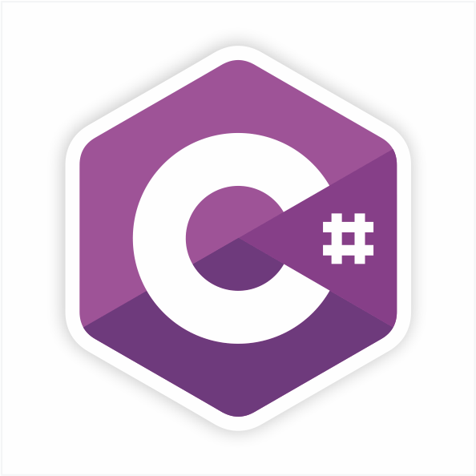

C# (C Sharp), Microsoft tarafından geliştirilen, nesne yönelimli ve genel amaçlı bir programlama dilidir. İlk olarak 2000 yılında .NET Framework ile birlikte piyasaya sürülmüştür ve günümüzde hem masaüstü hem de web uygulamaları geliştirmek için yaygın olarak kullanılır. C#, güçlü bir tür sistemine sahip olup, statik tip kontrolü sayesinde hatasız kod yazılmasını teşvik eder. Ayrıca, nesne yönelimli programlama prensiplerini destekler ve LINQ gibi modern özelliklere sahiptir. C# dilinde asenkron programlama da kolayca yapılabilir, bu da özellikle web ve mobil uygulamalarda verimliliği artırır. Dilin güçlü hata yönetimi ve çöp toplama mekanizmaları, yazılımcılara güvenli ve sürdürülebilir yazılım geliştirme imkanı sunar. C# aynı zamanda açık kaynaklıdır ve .NET Core sayesinde farklı platformlarda da çalışabilir.
